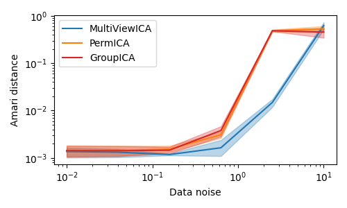

Note
Click here to download the full example code
Experiments on synthetic data¶
Out:
/home/circleci/miniconda3/envs/testenv/lib/python3.10/site-packages/sklearn/utils/extmath.py:368: FutureWarning: If 'random_state' is not supplied, the current default is to use 0 as a fixed seed. This will change to None in version 1.2 leading to non-deterministic results that better reflect nature of the randomized_svd solver. If you want to silence this warning, set 'random_state' to an integer seed or to None explicitly depending if you want your code to be deterministic or not.
warnings.warn(
# Authors: Hugo Richard, Pierre Ablin
# License: BSD 3 clause
import numpy as np
import matplotlib.pyplot as plt
from multiviewica import permica, groupica, multiviewica
# sigmas: data noise
# m: number of subjects
# k: number of components
# n: number of samples
sigmas = np.logspace(-2, 1, 6)
n_seeds = 3
m, k, n = 5, 3, 1000
cm = plt.cm.tab20
algos = [
("MultiViewICA", cm(0), multiviewica),
("PermICA", cm(2), permica),
("GroupICA", cm(6), groupica),
]
def amari_d(W, A):
P = np.dot(W, A)
def s(r):
return np.sum(np.sum(r ** 2, axis=1) / np.max(r ** 2, axis=1) - 1)
return (s(np.abs(P)) + s(np.abs(P.T))) / (2 * P.shape[0])
plots = []
for name, color, algo in algos:
means = []
lows = []
highs = []
for sigma in sigmas:
dists = []
for seed in range(n_seeds):
rng = np.random.RandomState(seed)
S_true = rng.laplace(size=(k, n))
A_list = rng.randn(m, k, k)
noises = rng.randn(m, k, n)
X = np.array([A.dot(S_true) for A in A_list])
X += [sigma * A.dot(N) for A, N in zip(A_list, noises)]
_, W, S = algo(X, tol=1e-4, max_iter=10000)
dist = np.mean([amari_d(W[i], A_list[i]) for i in range(m)])
dists.append(dist)
dists = np.array(dists)
mean = np.mean(dists)
low = np.quantile(dists, 0.1)
high = np.quantile(dists, 0.9)
means.append(mean)
lows.append(low)
highs.append(high)
lows = np.array(lows)
highs = np.array(highs)
means = np.array(means)
plots.append((highs, lows, means))
fig = plt.figure(figsize=(5, 3))
for i, (name, color, algo) in enumerate(algos):
highs, lows, means = plots[i]
plt.fill_between(
sigmas, lows, highs, color=color, alpha=0.3,
)
plt.loglog(
sigmas, means, label=name, color=color,
)
plt.legend()
x_ = plt.xlabel(r"Data noise")
y_ = plt.ylabel(r"Amari distance")
fig.tight_layout()
plt.savefig(
"../figures/synthetic_experiment.png",
bbox_extra_artists=[x_, y_],
bbox_inches="tight",
)
plt.show()
Total running time of the script: ( 0 minutes 15.249 seconds)